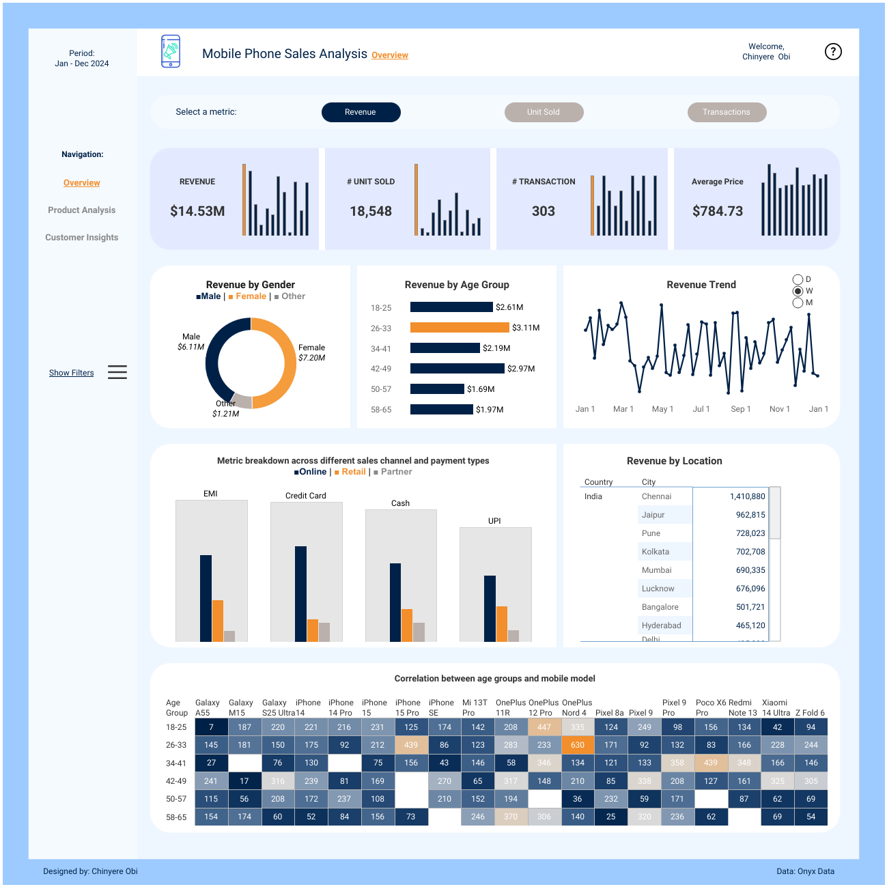

Mobile Phone Sales Analysis
Project Overview
This sales analytics dashboard provides comprehensive insights into mobile device sales performance across multiple brands and international markets. Designed for sales leadership and market analysts, it combines geographic visualization with brand performance metrics to support strategic market entry and expansion decisions.
The dashboard integrates sales data from 4 Asian countries and brands, enabling stakeholders to identify high-performing markets, compare brand competitiveness, and understand price-to-revenue relationships across different geographic regions. This analysis supports data-driven decisions for inventory allocation, marketing budget distribution, and sales team deployment.
Key Features
- Heat map showing Correlation between age groups and mobile model
- Brand performance comparison across all major mobile phone manufacturers
- Average price analysis by brand revealing market positioning strategies
- Revenue breakdown by brand highlighting market share and profitability
- Country-wise sales metrics identifying high-value markets and growth opportunities
- Interactive filtering capabilities for dynamic market segmentation
- KPI cards displaying total units sold, average transaction value, and revenue metrics
Analytical Insights
The analysis revealed clear market segmentation patterns, with premium brands commanding higher average prices while volume-focused brands dominated unit sales. Geographic analysis identified key markets with strong performance, enabling targeted expansion strategies and optimized resource allocation.
Brand comparison analysis highlighted competitive positioning opportunities, showing which manufacturers were successfully capturing different market segments. The price-to-revenue correlation provided insights into optimal pricing strategies for different geographic markets and customer segments.
Business Impact
This dashboard enabled the sales team to identify underperforming markets requiring additional support, recognize high-potential regions for expansion, and optimize inventory distribution based on regional brand preferences. The insights supported data-driven decisions that improved market coverage efficiency and revenue optimization across multiple territories.
- Overview An interactive sales analytics dashboard providing comprehensive analysis of mobile device sales across various brands and countries. Supports strategic market decisions by highlighting performance trends, geographic distribution, and brand competitiveness.
- Technologies Used Tableau Desktop, Calculated Fields, Interactive Filters, KPI Design, Microsoft Excel for data preparation
- Visualizations Heat maps for correlation, horizontal bar charts for brand comparison, stacked bars for revenue breakdown, KPI cards for key metrics, color-coded performance indicators
- Key Metrics Total Units Sold by Country, Brand Performance Rankings, Average Price by Brand, Revenue by Brand, Market Share Analysis, Geographic Sales Distribution
- Skills Demonstrated Market analysis and segmentation, geographic data representation, competitive brand analysis, revenue optimization insights, customer segmentation, Tableau storytelling, dashboard design for sales teams, data-driven strategic recommendations
- Insights Delivered Identified best-selling mobile brands across regions, analyzed average prices and revenue patterns by brand, highlighted country-wise sales distribution showing market concentration, revealed profitability trends across different market segments, provided actionable recommendations for market expansion and inventory optimization
- Business Value Enabled sales leadership to make informed decisions about market entry priorities, resource allocation, and competitive positioning. The geographic analysis identified expansion opportunities while brand performance metrics guided inventory and marketing investments.